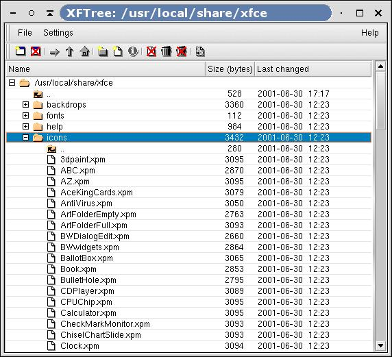

XFTree is a very simple file manager, which provides a graphical user interface to most common file operations. XFTree supports drag and drop to itself, other GTK+ applications and, of course, the XFce panel.

Figure 5-1. XFTree
Starting xftree will use the user's home directory as the default root if no directory is given as argument.
For XFTree a number of default shortcuts and mouse bindings are defined.
Table 5-1. XFTree default mouse bindings
| Mouse button | Click | Action |
|---|---|---|
| Right | Single | popup a context menu (which depends on selected items) |
| Left | Single | Select an item; [SHIFT] allow selection of multiple items and [CTRL] will add/remove items to the selection |
| Middle | Convenient for drag and drop since the selection will not be changed. | |
| Left | Double Click | Start the selected item or if the item is a regular file, start the registered application. If the selected item is a directory, expand or collapse the entry. |
| Left | Double Click + Alt key | The same as above, but start application in a terminal or if a directory is selected change the root of the tree to that directory. |
| Left or Middle | Drag and drop | By default, drag and drop moves the items. If [Ctrl] is pressed during drag, items are copied instead. Pressing [CTRL+SHIFT] during drag and drop will link the destination to the source (symbolic link). Drag and drop of URL is allowed, e.g. from mozilla as long as CURL is available. The corresponding file will be downloaded |
Table 5-2. XFTree default keyboard shortcuts
| Key | Action |
|---|---|
| Alt-A | Select all items of the selected directory |
| Alt-Shift-A | Unselect all |
| Ctrl-A | Open the about dialog |
| Alt-D | Duplicate the marked file |
| Alt-Shift-D | Hide/show hidden files (dotfiles) |
| Alt-E | Empty the trash directory |
| Alt-F | Find files in the current directory |
| Alt-G | Go to selected directory or ask if no directory is selected |
| Alt-D | Go to home directory |
| Alt-I | Properties of selected item |
| Alt-J | Define a default application for a file name suffix |
| Alt-K | create a new file |
| Alt-N | create a new directory |
| Alt-Q | Quit the program |
| Alt-R | Rename selected file or directory |
| Alt-T | Open trash directory in new window |
| Alt-U | Go up one directory |
| Alt-W | Close current window |
| Alt-X | Delete selected items |